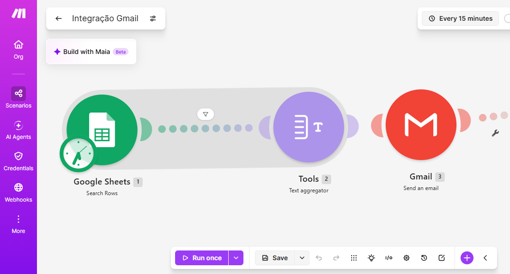
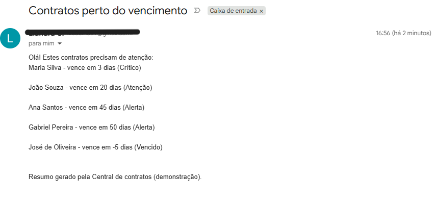
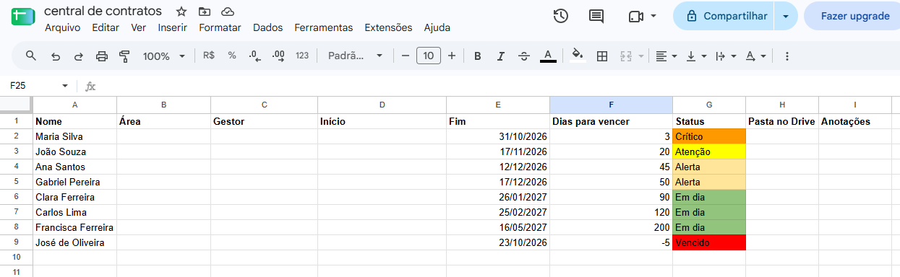
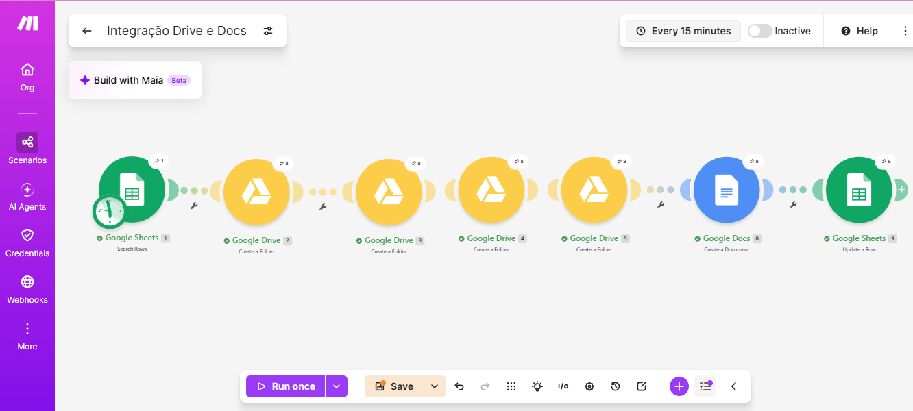
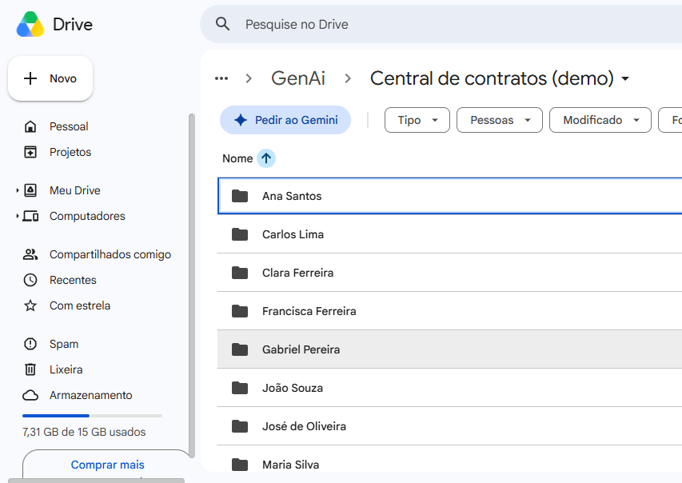
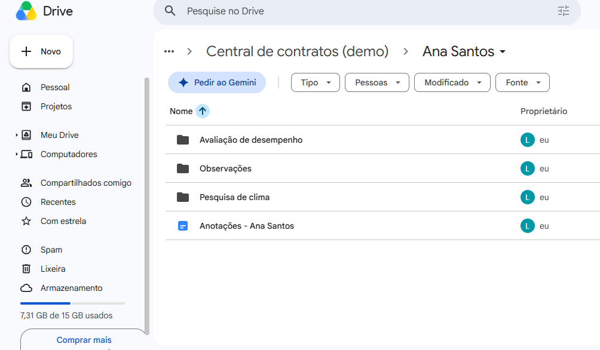
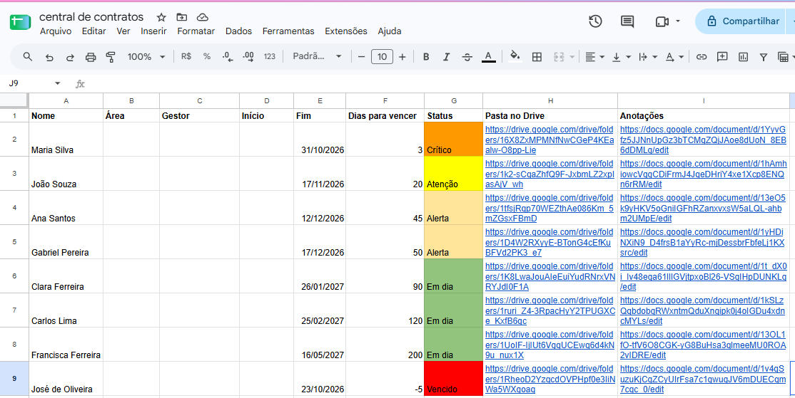

Qual era o objetivo
Deixar a gestão de contratos de estágio mais segura e mais rápida, com dois resultados:
- Avisar com antecedência quando um contrato está perto de vencer (a partir de 2 meses antes), para dar tempo de decidir se renova ou encerra.
- Juntar em um só lugar tudo o que diz respeito a cada pessoa: anotações, avaliação de desempenho, pesquisa de clima e outras observações.
Este é um tipo de fluxo que já usei na prática. Aqui, recriei do zero com dados fictícios para poder medir o tempo economizado, o que eu não tinha como comprovar antes.
O problema, em palavras simples
- As datas de fim de contrato ficam numa planilha, e o aviso depende de alguém lembrar de olhar.
- As informações de cada pessoa ficam espalhadas em vários arquivos e lugares.
- Toda pessoa nova exige o mesmo trabalho repetido: criar a pasta, criar as subpastas, criar o documento de anotações e anotar o link na planilha.
O que foi feito
1. A planilha
Cada linha é um contrato, com: nome, área, gestor, data de início, data de fim, dias para vencer, status, link da pasta no Drive e link das anotações. Os dias para vencer e o status são calculados sozinhos, com estas regras:
| Dias para vencer | Status |
|---|---|
| Mais de 60 | Em dia |
| De 31 a 60 | Alerta |
| De 8 a 30 | Atenção |
| De 0 a 7 | Crítico |
| Menos de 0 | Vencido |
Para a demonstração não ficar desatualizada com o tempo, as datas de fim são calculadas a partir do dia de hoje.
2. Fluxo de alerta de vencimento
O Make lê a planilha, deixa passar só os contratos que precisam de atenção, junta tudo em uma lista (uma linha por pessoa, com os dias que faltam e o status) e envia um único e-mail com essa lista.
3. Fluxo de pastas e anotações por pessoa
Para cada pessoa que ainda não tem pasta, o fluxo cria, dentro da pasta geral do projeto, uma pasta com o nome dela e três subpastas: Avaliação de desempenho, Pesquisa de clima e Observações. Cria também um documento de Anotações e grava os dois links na própria planilha. Quem já tem pasta é ignorado, então dá para rodar de novo sem duplicar nada.
Como ficou (prints)
Fluxo de alerta



Fluxo de pastas e anotações



Resultado final

Horas ganhas (medido em cenário simulado)
Tarefa medida: criar a pasta, as 3 subpastas e o documento de anotações de uma pessoa e registrar os links na planilha.
| Item | Valor |
|---|---|
| Pessoas novas por mês | 10 (estimativa, para simplificar a conta) |
| Economia por mês | cerca de 2,3 horas |
| Economia por ano | cerca de 28 horas |
Conta: (15 − 1) minutos × 10 pessoas = 140 minutos por mês, ou 2,3 horas. Multiplicando por 12, chega-se a cerca de 28 horas por ano. O tempo com o fluxo inclui rodar e conferir o resultado.
Decisões e aprendizados
- Plano gratuito do Make: tem limite mensal de créditos e poucos cenários ativos. Por isso os fluxos rodam sob demanda, sem agendamento, e foram montados com poucos módulos.
- Filtros: o alerta só deixa passar quem precisa de atenção, e a criação de pastas pula quem já tem pasta. Isso evita e-mails inúteis e pastas duplicadas.
- Ligar módulos entre si: cada subpasta e o documento precisam apontar para a pasta da pessoa. Aprendi na prática como um módulo passa informação para o seguinte, e como erros desse tipo (pasta não encontrada, subpastas uma dentro da outra) aparecem e se corrigem.
- Autorização com Google: o Make só mexe na minha conta depois que eu autorizo, sem nunca receber minha senha.
Limites desta demonstração
- São 8 pessoas fictícias. Nada aqui é de uma empresa ou de uma pessoa real.
- O fluxo roda manualmente e não está agendado.
- O tempo gasto para montar o fluxo não entra na conta de horas ganhas. A economia aparece depois de usar várias vezes.
- Em uso real, avaliações de desempenho e pesquisas de clima são dados sensíveis e precisam ficar em pastas privadas, com acesso restrito.